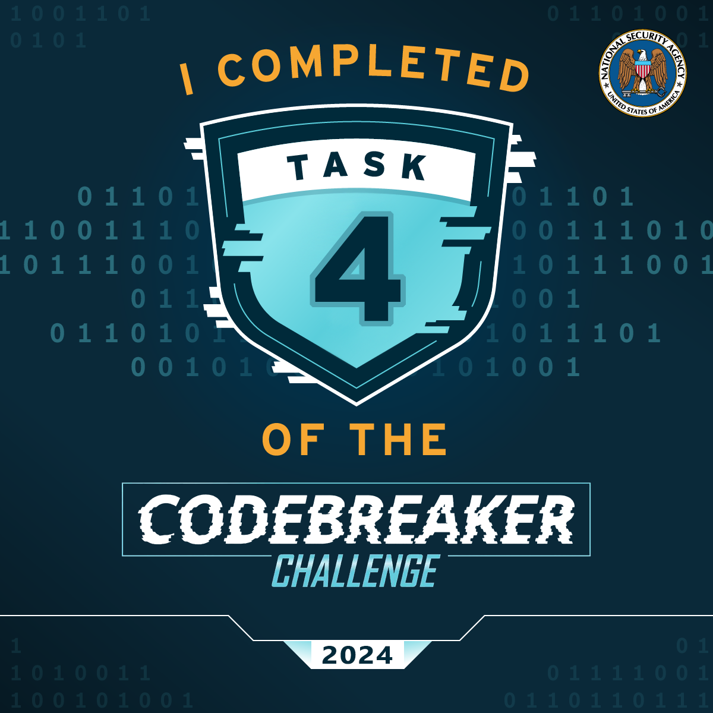

Task 4 - LLMs never lie - (Programming, Forensics)
Great work! With a credible threat proven, NSA's Cybersecurity Collaboration Center reaches out to GA and discloses the vulnerability with some indicators of compromise (IoCs) to scan for.
New scan reports in hand, GA's SOC is confident they've been breached using this attack vector. They've put in a request for support from NSA, and Barry is now tasked with assisting with the incident response.
While engaging the development teams directly at GA, you discover that their software engineers rely heavily on an offline LLM to assist in their workflows. A handful of developers vaguely recall once getting some confusing additions to their responses but can't remember the specifics.
Barry asked for a copy of the proprietary LLM model, but approvals will take too long. Meanwhile, he was able to engage GA's IT Security to retrieve partial audit logs for the developers and access to a caching proxy for the developers' site.
Barry is great at DFIR, but he knows what he doesn't know, and LLMs are outside of his wheelhouse for now. Your mutual friend Dominique was always interested in GAI and now works in Research Directorate.
The developers use the LLM for help during their work duties, and their AUP allows for limited personal use. GA IT Security has bound the audit log to an estimated time period and filtered it to specific processes. Barry sent a client certificate for you to authenticate securely with the caching proxy using https://34.195.208.56/?q=query%20string.
You bring Dominique up to speed on the importance of the mission. They receive a nod from their management to spend some cycles with you looking at the artifacts. You send the audit logs their way and get to work looking at this one.
Find any snippet that has been purposefully altered.
Downloads:
Prompt:
Solving the task:
In progress
The solution:
In progress
That's the snippet! I doubt the LLM is supposed to suggest an import like that.
